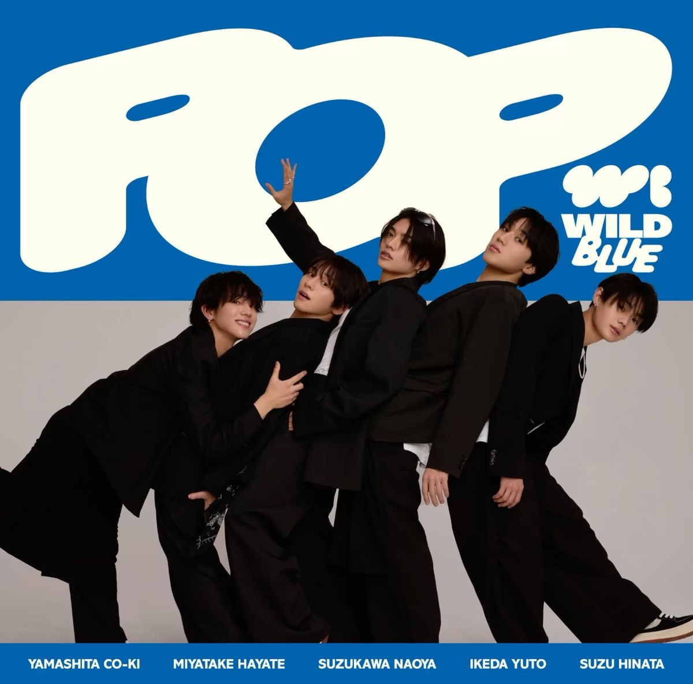
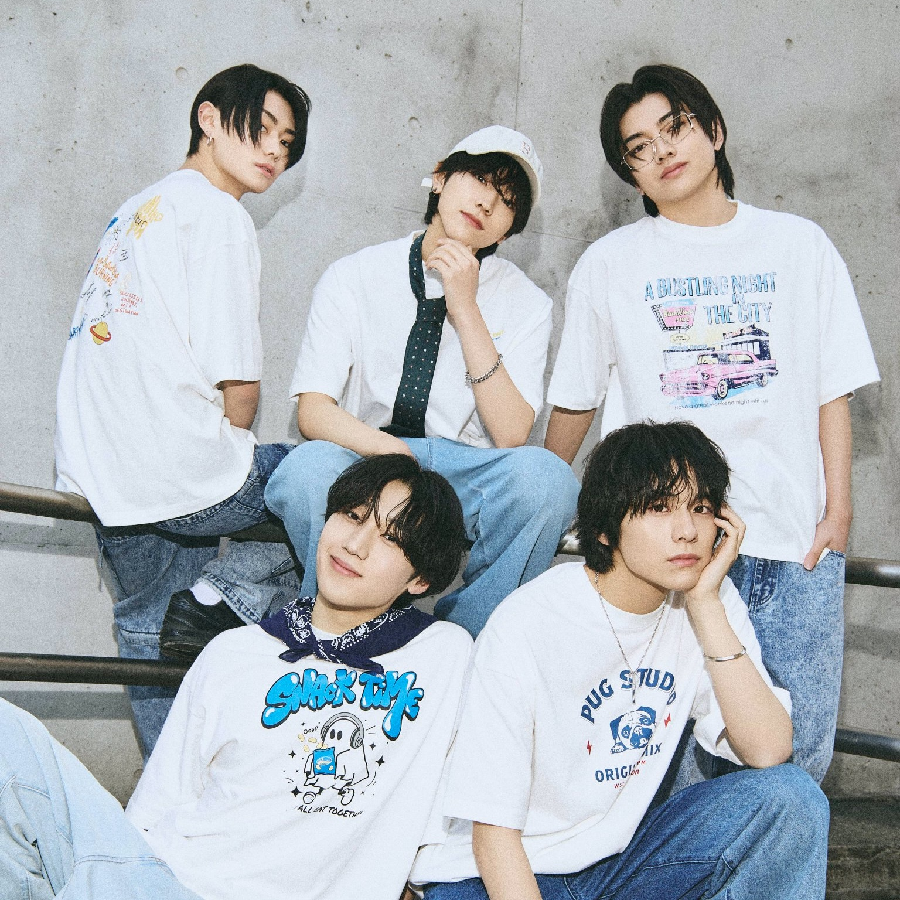
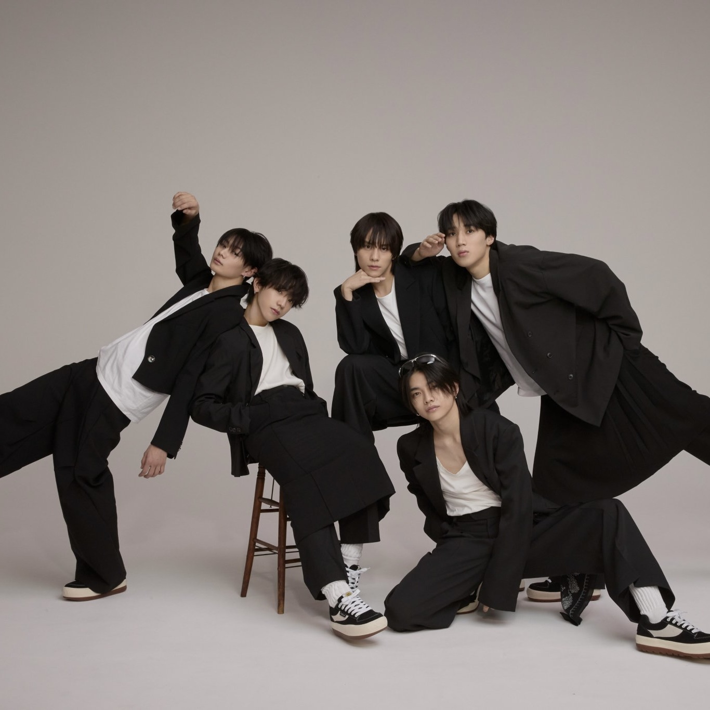

MUSIC>>
My favorite artist : WILD BLUE



[WILD BLUE Introduction]
「心の赴くままに生きる勇気をくれるグループ」をコンセプトに結成した５人組ボーイズグループ。
グループ名のWILD BLUEは「無限に広がる青空」という意味が込められていて、いつでもそばに居続け、力を必要とする人には、希望や勇気になってくれる
記憶に溶け込むほど、リアルで親近感のあるメンハ゛ーが挑戦し続ける姿で、彼らと「共に冒険したい! 」と思わせまるで前から彼らを知っていたような“存在しない記憶”を呼ひ゛起こすエモーショナルな存在。
情報過多のSNS時代に、完璧を求め・求められることに疲れた人々に自分の「心の声」に耳を傾ける時間を提供していく、魅力的ですてきなグループ。
メンバーは5人。山下幸輝、宮武颯、鈴川直弥、池田優斗、鈴陽向。ボーカル・ダンススキルが高く個性豊かなボーイズグループ。
[POP MV]